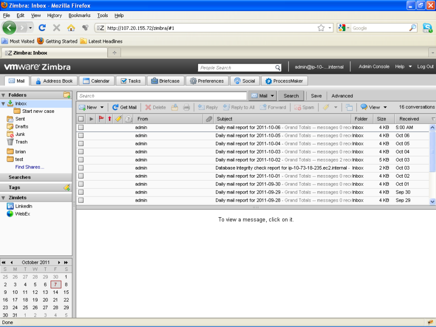
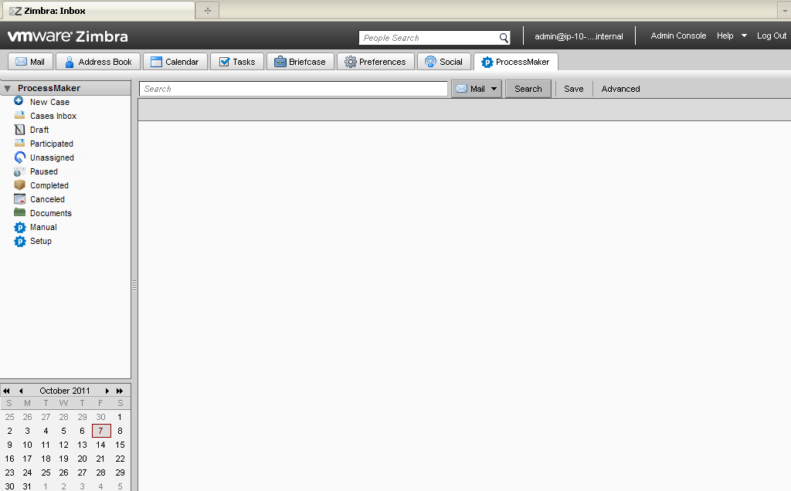
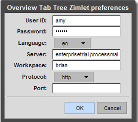
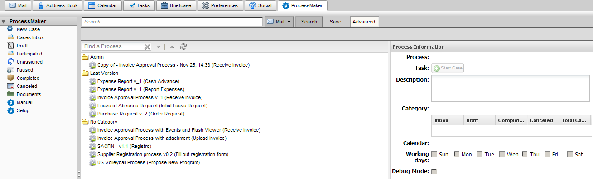
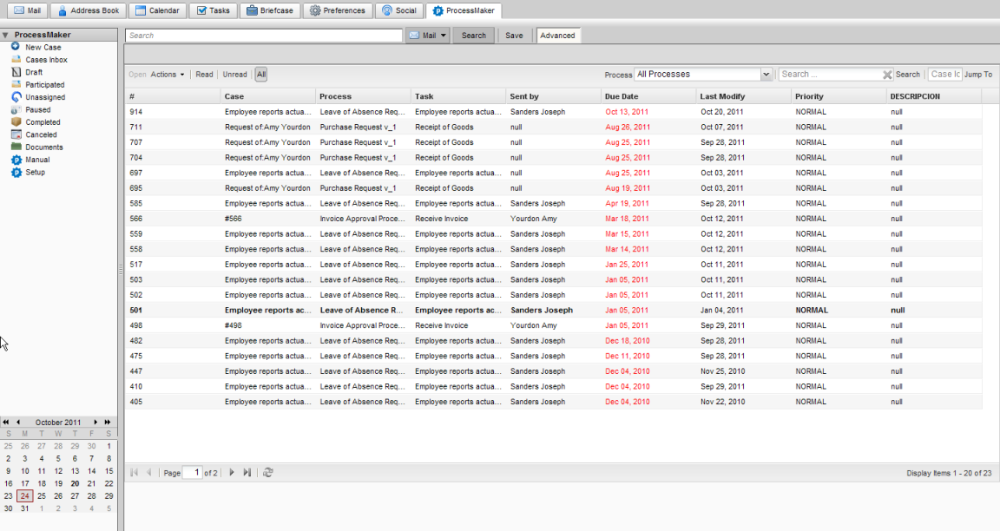
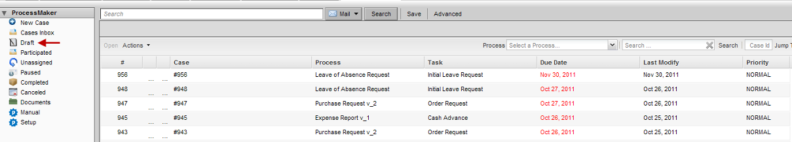
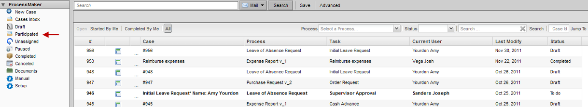
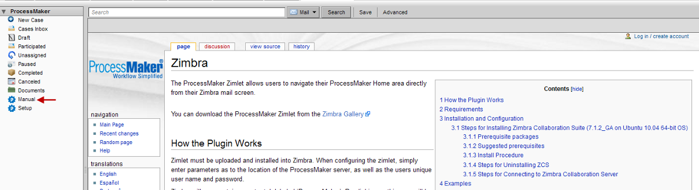

Overview
The ProcessMaker Zimlet allows users to navigate their ProcessMaker Home area directly from their Zimbra mail screen.
You can download the ProcessMaker Zimlet from the Zimbra Gallery.
Note: ProcessMaker Zimlet does not integrate with any version of Zimbra Desktop.
How the Plugin Works
Zimlet must be uploaded and installed into Zimbra. When configuring the zimlet, simply enter parameters as to the location of the ProcessMaker server, as well as the users unique user name and password.
Zimbra will now contain an extra tab labeled ‘ProcessMaker’. By clicking on this, you will be taken to a new screen with the ProcessMaker home area displayed. Here you have access to all of the folders in ProcessMaker, allowing you to work with and manage your cases just as if you’d logged directly into your ProcessMaker workspace.
Dynaforms are displayed to the user in the preview area of Zimbra and the user interacts with them in the same manner as normal.
Requirements
The actual version of Zimlet is pmZimbraZimlet_3.1.1 and it is available here.
This version of Zimlet is compatible with the following:
| ProcessMaker | Zimlet | Zimbra |
|---|---|---|
| PM 2.5.2.x | pmZimbraZimlet_3.1.1 |
WebClient 8.0 Desktop 7.2.5 |
| PM 3.0.x.x | ||
| PM 3.2.1 | ||
| PM 3.2.2 |
This Zimlet no longer supports Zimbra WebClient 8.7.
Recommendations
- Time on Zimbra server must be the same as Time on ProcessMaker server, otherwise some triggers may not work.
Installation and Configuration
Steps for Installing Zimbra Collaboration Suite (7.1.2_GA on Ubuntu 10.04 64-bit OS)
Install Zimbra by typing "./install.sh" and uninstall by typing "./install.sh -u"
Prerequisite packages
- NPTL
- sudo-1.7.2p1-1ubuntu5.3
- libidn11-1.15-2
- libpcre3-7.8-3build1
- libgmp3c2-2:4.3.2+dfsg-1ubuntu1
- libexpat1-2.0.1-7ubuntu1
- libstdc++6-4.4.3-4ubuntu5
- libperl5.10-5.10.1-8ubuntu2.1
Suggested prerequisites
- perl-5.10.1
- sysstat
- sqlite3
Install Procedure
- Start the Ubuntu server and connect using PuTTY.
- At the login prompt, login with your administrator account (administrator / myadminpass) and then type su and the root password (myrootpass)
- Download the Open Source Edition from Open Source Edition Downloads: Enterprise Messaging and Collaboration Software by Zimbra.
Download directly from the server
- Obtain the download URL from the Zimbra OSE page
- Type the following commands on the server console (using the correct URL)
Code:
- Extract the archive by typing the following commands:
Code:
tar -C /temp/install --strip-components=1 -xzf /temp/zcs*
Start the installation program by typing the following:
Code:
./install.sh
Agree to license agreement? Press y {ENTER}
If you are missing any prerequisites, exit the installation and install them. You can install all at one time by separating each name with a space after apt-get install such as the following:
Code:
# Install zimbra-logger? Press y {ENTER}
# Install zimbra-mta? Press y {ENTER}
# Install zimbra-snmp? Press y {ENTER}
# Install zimbra-store? Press y {ENTER}
# Install zimbra-apache? Press y {ENTER}
# Install zimbra-spell? Press y {ENTER}
# Install zimbra-memcached? Press n {ENTER} (if multi-server, press y instead)
# Install zimbra-proxy? Press n {ENTER} (if multi-server, press y instead)
# The system will be modified. Continue? Press y {ENTER}
# DNS ERROR resolving MX for localhost.localdomain. Change domain name? Press n
#Select Admin password, press 4 {ENTER}. Then type your new password {ENTER}
#Press r {ENTER} for previous menu
#Press a {ENTER} to apply changes.
#Press y {ENTER}, {ENTER} to save configuration (/opt/zimbra/config.9066)
#The system will be modified - continue? Press y {ENTER}
#Notify Zimbra of your installation? Press n {ENTER} (feel free to answer yes if this is not a test system)
#Press {ENTER} to exit setup. NOTE: Log files placed in /opt/zimbra/log
Now your ZCS Open Source installation has been completed.
To test your zimbra service login as Zimbra user :-
The output should look like this:
antivirus Running
ldap Running
logger Running
mailbox Running
mta Running
snmp Running
spell Running
If any service is not running then you can do start/stop your zimbra service :-
For Normal User - http://ec2-107-20-155-72.compute-1.amazonaws.com
Steps for Uninstalling ZCS
Steps for Connecting to Zimbra Collaboration Server
Enter URL http://ec2-107-20-155-72.compute-1.amazonaws.com or http://107.20.155.72/
Password : solutions
You will get a screen as below:

After Logging You Will get a Screen as below:

Click on the ProcessMaker Tab.
By clicking on the Tab ProcessMaker Options will display as shown below.

Go to Preference by clicking ProcessMaker Tab > Setup.
A window popup will display to fill the details of ProcessMaker.

Where:
- UserName – Processmaker username
- Password - Processmaker password
- Languages - English
- Server – The server name on which the processmaker resides
- Workspace – Proceessmaker workspace
- Protocol – http/https
- Port –if not default port then mention the port used by ProcessMaker.
And then click on Ok.
Once the Preference is set ProcessMaker Environment will start.
Login works only after the preferences are set.
Examples
New Case
Go to Start 'New Case by Clicking ProcessMaker Tab > New Case.

On Click of Start New Case You will get a window popup in which there will be list of Processes to be started.

Select any one and click on OK.
Cases Inbox
Go to Cases Inbox by Clicking ProcessMaker Tab > Cases Inbox.
On Click of Cases Inbox you will get a window in which there will be list of Case Ids to be started.

Select any one and click on OK.
Draft
Go to Draft by Clicking ProcessMaker Tab > Draft. On Click of Draft you will be redirected to Draft in the ProcessMaker that will be visible in Main Content Area of the Tab.

Participated
Go to Participated by Clicking ProcessMaker Tab > Participated. On Click of Participated you will be redirected to Participated in the ProcessMaker that will be visible in Main Content Area of the Tab.

Paused
Go to Paused by Clicking ProcessMaker Tab > Paused. On Click of Paused you will be redirected to Paused in the ProcessMaker that will be visible in Main Content Area of the Tab.
Unassigned
Go to Unassigned by Clicking ProcessMaker Tab > Unassigned .On Click of Unassigned you will be redirected to Unassigned in the ProcessMaker that will be visible in Main Content Area of the Tab.
Documents
Go to Documents by Clicking ProcessMaker Tab >Documents. On Click of Documents you will be redirected to Documents in the ProcessMaker that will be visible in Main Content Area of the Tab.

Manual
Go to Manual by Clicking ProcessMaker Tab > Manual. On click of this Link ProcessMaker Wikipedia webpage will be available in the Main Content Area of the Tab.
